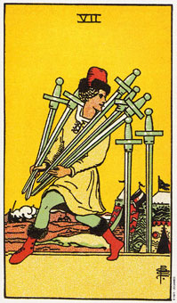

宝剑七意味如果你想要成功的话，你需要一种新的方法。
塔罗牌中所有的七有着共同的意义：不要放弃。而宝剑牌的七则意指在精神上不要放弃。此时正是另觅途径，以不同的解决之道来因应眼前问题的时刻了。
这张牌画的是一个军营。前景中这个人正在偷取敌人的武器。他拒绝投降，所以在还有时间的情况下，他做任何可能扭转局势的事。
在早晨，这些剑的主人打算利用它们来杀死画面上这个人，然而他可还没放弃呢。他知道偷走部分的武器，就能增加生存的机会。他是一个穷则变、变则通的人。他正在找寻心目中认为可达成生存目标的方法。
这张七暗示经由审慎评估各种可能，你就能找到有效的解决之道。
纵观历史上某些伟大的发明，都导引于人们能够以不同的角度来思考事情。透过“不按理出牌”的思考方式，有时候还真能让你走向意想不到的目的地呢。
大体上的意义
宝剑七所传达的讯息是：不要放弃。去找寻另一种可以达成目标的方法吧。坐下来，检查一下你所有的选择。和这个挑战玩点心智游戏，以便发现先前未曾预见的可能性。你当然还有时间来完成你的愿望，然而在方法上需要更有弹性。
简单地说，入股哦你的不到想要的回馈，那就去做不同的事情吧。
各种行动的不同组合方式，就有可能会带来不同的结果。
七同时也是一张秘密、隐藏动机和不坦诚的牌。例如，盖瑞打算要做一桩买卖，而排出来的牌当中有一张宝剑七。我警告他，把他的钱财投进去之前，要非常严密的检核这项生意。后来他果然证实了我的怀疑。因为老板对目前事业的成功并不坦白，有一位资深经理在毫无预警的情况下带走公司五十万美元的资金，这件事就发生在盖瑞检查这项投资计划的一个月以后。
两性关系上的意义
在两性关系的分析上来看，宝剑七并不尽然是张积极的牌。它所叙述的是不坦诚，而且假设是在圣杯三的旁边出现，那它可能暗示一段三角关系，例如，其中一个人可能会有外遇。
这张牌也可能暗示，对一段既存的两性关系采行新作风，可能让你得到你所追寻的回报。别放弃你的两性关系，找出一种新方法来达成你的目标吧。
倒立的宝剑七
倒立的宝剑七可能是在暗示，你正在使用一种过时的方法来处理事情。该是听听别人意见的时候了，因为可能有人提供你所需要的忠告。如果你想达成目标，需要的是一种截然不同的态度。
做同样的事情通经常会产生同样的结果。如果你并不想要你目前所得到的结果，那么改变你的态度吧!
七的倒立可能还暗示着欺骗或自我欺骗。自我欺骗会窄化你的认知，而结果就会影响到你处理事物时所做的选择。塔罗牌中七的倒立有一个共同的含义：不要把持不放。换句话说，不要死守着你旧有的思考方式、做事方式或是对事情的感觉。
或许你正死守这一个对生活不合理的信念不放，同时还骗自己说，事情从以前到现在一直以来都进行的很好。宝剑对生活的一个态度是：如果你不喜欢这个世界，就改变你的想法吧――这世界将会顺从你的意思来改变。